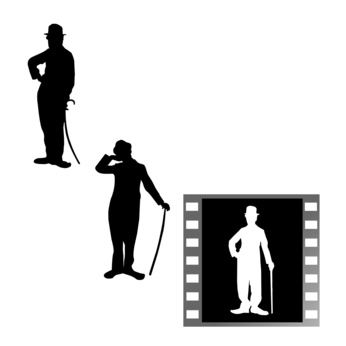

As I Began to Love Myself

As I began to love myself I found that anguish and emotional suffering are only warning signs that I was living against my own truth. Today, I know, this is "AUTHENTICITY".
As I began to love myself I understood how much it can offend somebody if I try to force my desires on this person, even though I knew the time was not right and the person was not ready for it, and even though this person was me. Today I call it "RESPECT".
As I began to love myself I stopped craving for a different life, and I could see that everything that surrounded me was inviting me to grow. Today I call it "MATURITY".
As I began to love myself I understood that at any circumstance, I am in the right place at the right time, and everything happens at the exactly right moment. So I could be calm. Today I call it "SELF-CONFIDENCE".
As I began to love myself I quit stealing my own time, and I stopped designing huge projects for the future. Today, I only do what brings me joy and happiness, things I love to do and that make my heart cheer, and I do them in my own way and in my own rhythm. Today I call it "SIMPLICITY".
As I began to love myself I freed myself of anything that is no good for my health – food, people, things, situations, and everything that drew me down and away from myself. At first I called this attitude a healthy egoism. Today I know it is "LOVE OF ONESELF".
As I began to love myself I quit trying to always be right, and ever since I was wrong less of the time. Today I discovered that is "MODESTY".
As I began to love myself I refused to go on living in the past and worrying about the future. Now, I only live for the moment, where everything is happening. Today I live each day, day by day, and I call it "FULFILLMENT".
As I began to love myself I recognized that my mind can disturb me and it can make me sick. But as I connected it to my heart, my mind became a valuable ally. Today I call this connection "WISDOM OF THE HEART".
We no longer need to fear arguments, confrontations or any kind of problems with ourselves or others. Even stars collide, and out of their crashing new worlds are born. Today I know "THAT IS LIFE"!
当我开始爱自己的时候
我不再沉溺于过去
也不再为将来担忧
现在，我只活在一切正在发生的当下
今天，我活在此时此地
如此日复一日
这就叫完美